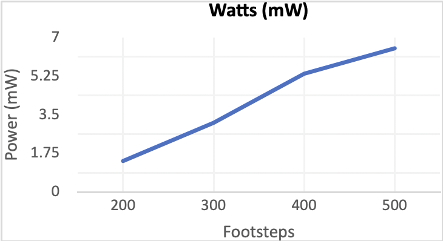

The project, "Mobile Charging System Using Foot Power with Near Field Communication Technology," addresses the increasing demand for sustainable energy solutions. In the face of rising energy needs and limitations of traditional sources, the focus is on leveraging foot power and Near Field Communication (NFC) technology for mobile charging. By harnessing mechanical energy through piezoelectric sensors and ensuring secure access with NFC, the project aims to provide an alternative, eco-friendly, and accessible solution for mobile charging in public spaces.
The system incorporates piezoelectric sensors embedded in a walkable surface, converting mechanical energy from footsteps into electrical power.
To ensure controlled access, NFC technology is utilized for user authentication, providing a secure and convenient charging experience.
Focused on promoting green energy, the project aims to address the lack of mobile charging infrastructure in public areas by tapping into renewable foot power, offering a sustainable and accessible solution.
The development process involves creating a robust infrastructure that seamlessly integrates piezoelectric energy harvesting and NFC authentication. The steps include:
Embedding piezoelectric sensors within the designated walkable area to capture mechanical energy from footsteps.
Utilizing piezoelectric sensors to convert mechanical energy into electrical energy through the piezoelectric effect.
Implementing an AC-to-DC converter to rectify the generated electrical output, making it suitable for charging mobile devices.
Integrating NFC technology for secure user authentication, allowing controlled access to the charging stations.
Conducting thorough testing of the integrated system to ensure the efficient conversion of footstep energy and reliable NFC authentication.
Fine-tuning the system for optimal performance, including balancing power output, improving charging efficiency, and addressing any identified challenges.
The experimental phase validated the effectiveness and feasibility of the foot-powered mobile charging system.
Piezoelectric sensors generated electrical power in response to foot traffic, averaging between 10-20 mW.
NFC technology ensured secure user authentication, allowing controlled access to the charging stations.
The system demonstrated stability in real-world scenarios, withstanding foot traffic in pedestrian walkways and parks.
Sensitivity to surface materials was observed, with harder surfaces generating more power compared to softer surfaces.
Users achieved reasonable charging times, indicating the system's practicality for mobile device charging.
The experimental outputs collectively support the conclusion that the foot-powered mobile charging system is a viable and sustainable solution for public spaces.